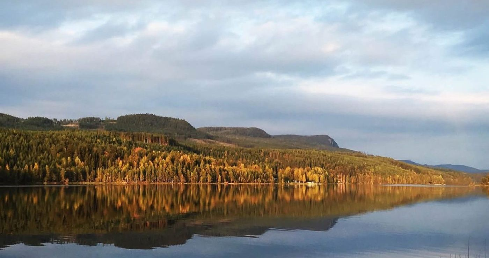

Älvdalska
Älvdalens egen dialekt, älvdalska, har rötter i fornnordiskan.

Älska Älvdalen
Att fler ska trivas, besöka och flytta till Älvdalen.
Funderar du på att byta ort? Här samlar vi det du behöver veta om att leva i Älvdalen.
UtforskaKommer du på besök? Hitta natur, kultur och evenemang — året runt.
UtforskaSå hittar du ett hem i Älvdalen och byarna runt omkring.
UtforskaDet här är Älvdalen
Älvdalens egen dialekt, älvdalska, har rötter i fornnordiskan.
Bergarten porfyr har format hantverkstraditionen i bygden.
På Porfyr- och Hagströmsmuseet kan du se Hagströms gitarrer.
Utsiktsplats i Älvdalen, känd för sin utsikt.
Sveriges högsta damm ligger i Älvdalen.
Idre, Särna-Fulufjället och Grövelsjön ligger i Älvdalens kommun.

Flytta hit
Vi vill att fler ska trivas, besöka och flytta till Älvdalen. På Flytta hit samlar vi det som är bra att veta: varför Älvdalen, hur du hittar boende, byarna runt omkring och vilka som kan hjälpa dig vidare.
Läs mer om att flytta hitMusik, kultur och andra evenemang för både besökare och Älvdalsbor samlas i Visit Dalarnas kalender för Älvdalen.
Co-work & kreativ hub
Tack vare Älvdalens Besparingsskog kan vi nu öppna CO-work & en kreativ hub. Det blir i Blå huset på Dalgatan 100.
Du är välkommen att plugga, jobba, ha möten, event eller workshops här — helt gratis!
Läs om Creativet
Föreningen bakom sidan
Vi vill vara en motor för utvecklingen i byn, där vi tillsammans med andra föreningar, företag, ideella krafter och Älvdalens Kommun ska se till att Älvdalen är en attraktiv plats.